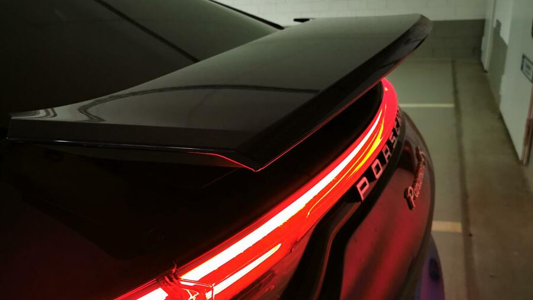

Supersportwagen für jeden Tag – das kann der McLaren GT

Der Supersportwagen ist bequemer als viele andere seiner Art.
Aber wissen Sie was? Die Ingenieure und Designer der kleinen Marke mit dem großen Klang nach Formel 1 haben recht: Der McLaren GT ist tatsächlich so etwas wie ein Supersportwagen für jeden Tag. Ein Attribut, das man in dieser Leistungsklasse bislang fast ausschließlich einem Porsche 911 Turbo zugestehen mochte.
Von dessen Alltagstauglichkeit ist der GT doch noch ein bisschen entfernt. Aber für einen McLaren und im Vergleich - sagen wir zum Schwestermodell 720 S - kommt er geradezu kommod daher.
Und das liegt sicher nicht am Motor. Auch der GT hat den 4,0-Liter-V8 unter der Haube, hier im Vergleich zum 720S lediglich um 100 PS auf 456 kW/620 PS gezähmt und in der Spitze „nur“ noch 326 statt 341 km/h schnell. Das ist verkraftbar.
Da auch der GT wie bei McLaren üblich ein ausgesprochenes Leichtgewicht ist und vor allem dank des Carbon-Chassis auf nur 1.530 Kilogramm kommt, muss ein PS hier noch nicht mal 2,5 Kilo bewegen. Gegenüber einem Aston Martin DB11 und dessen rund 1.800 Kilo ein großer Vorteil.
Dank viel Carbon ist der GT ein Leichtgewicht.
Und so fährt sich der GT auch: natürlich sehr schnell, sehr agil und auch handlich. Und dabei wie erwähnt im Rahmen dieser Fahrzeugklasse auch richtig komfortabel. Hier hilft die serienmäßige proaktive Dämpfung, vor allem wenn man im alltagstauglichen Komfort-Modus unterwegs ist.
Innen findet man sich auf Anhieb gut zurecht im GT.
Zweisitziger, zweitüriger Supersportwagen
Ansonsten werden stattliche 630 Newtonmeter Drehmoment an die Hinterräder geleitet. Wer es drauf anlegt, fährt aus dem Stand in 3,2 Sekunden auf Tempo 100 und in weniger als 10 Sekunden auf 200. Leider konnten wir das angesichts des rheinländischen Verkehrs nicht überprüfen.
Ebenso wenig wie die erwähnte Höchstgeschwindigkeit von 326 km/h. Knapp 280 waren es auf abendlicher freier Autobahn mal kurz und wir hatten durchaus das Gefühl, dass wir noch weit von der Leistungsgrenze des Fahrzeugs entfernt waren. An Grenzen kommt das Fahrzeug lediglich im Stadtverkehr – enge Straßen und Wendemanöver sind seine Sache nicht. Immerhin beträgt die Außenbreite mit Spiegeln lockere 2,10 Meter.
Aufpassen muss man auch beim Parken: Die spektakulären Flügeltüren nehmen geöffnet zwar weniger Raum ein als eine offene normale Türe, das elegante Hochschwingen könnte aber dazu verführen, den Raumbedarf falsch einzuschätzen.
Dafür ist man bei McLaren besonders stolz auf die beiden Gepäckabteile. Vorne gibt es eine manuell zu öffnende Klappe, unter der es ähnlich wie bei einem Porsche Platz (150 Liter) für einen Trolley gibt. Die Heckklappe lässt sich sogar elektrisch öffnen, bietet 420 Liter Stauraum. Allerdings erstreckt sich dieser recht flach über dem Mittelmotor, große Koffer lassen sich hier nicht unterbringen.
Trotzdem bietet sich der McLaren GT zumindest für einen Wochentrip auch als Reisefahrzeug an. Lenkung, Bremsen und Bodenfreiheit wurden alltagstauglicher gestaltet als bei anderen Fahrzeugen der Marke, so dass man viel entspannter und stressfreier unterwegs ist. Wer es drauf anlegt, kann den Engländer sogar zumindest in die Nähe der rund 12 Liter Normverbrauch fahren. Wer die sich hinterm Rücken entwickelnde Leistung auch nutzen will, wird wohl wie wir eher mit 15 Litern rechnen müssen.
Spätestens hier zeigt sich, dass auch der komfortabelste McLaren immer noch ein Sportwagen der Superlative ist – mit allen Vor- und Nachteilen. Zu denen auch der wettbewerbsübliche Grundpreis von 198.000 Euro gehört, die man problemlos um einige zehntausend Euro für Dinge aus der Optionsliste erhöhen kann. Der GT ist nicht nur ein Traumwagen, sondern leider auch einer, von dem wir nur träumen können.
Innen findet man sich auf Anhieb gut zurecht im GT. Das kleine senkrecht angebrachte Infotainment-Display erfordert etwas Eingewöhnung, überfordert aber nicht. Vielmehr ist es schön, dass McLaren hier kein riesiges Display verbaut, schließlich handelt es sich hier trotz komfortablerer Auslegung immer noch um einen Supersportwagen. Das Komfortgefühl wird auch durch die Luftigkeit des Innenraums unterstrichen, kein Vergleich etwa mit einem Lamborghini. Zaubern können aber auch die Interieurdesigner nicht – für Ablagen war im schön gestalteten Cockpit kaum mehr Platz.
Technische Daten
Länge: 4,68 Meter
Breite: 2,05 Meter (mit Außenspiegeln: 2,10 Meter)
Höhe: 1,21 Meter
Radstand: 2,68 Meter
Kofferraumvolumen: 570 Liter (v: 150/h: 420)
4,0-Liter-V8-Twinturbo in Mittelmotor-Anordnung
456 kW/620 PS, maximales Drehmoment: 630 Nm bei 5.500 – 6.500 U/min
Breite: 2,05 Meter (mit Außenspiegeln: 2,10 Meter)
Höhe: 1,21 Meter
Radstand: 2,68 Meter
Kofferraumvolumen: 570 Liter (v: 150/h: 420)
4,0-Liter-V8-Twinturbo in Mittelmotor-Anordnung
456 kW/620 PS, maximales Drehmoment: 630 Nm bei 5.500 – 6.500 U/min
Ist dieser Panamera ein waschechter Schwabe?
Der Sportwagenbauer hat seiner Tourenlimousine jüngst eine Auffrischung der Modellreihe spendiert, der 4S ist dabei Teil des aufgestockten Hybrid-Angebots (vollelektrisch gibt es inzwischen den Taycan).
Der Allradsportler sortiert sich zwischen den Halbstromvarianten des Panamera 4 und Turbo S ein.
Dabei gibt es den 4S wiederum als normale Variante, den leicht längeren „Executive“ sowie als Kombi. So viel zur kleinen Porsche-Kunde.
Technische Daten
- Oberklasselimousine
- Länge: 5,05 Meter
- Breite: 1,94 Meter, mit Außenspiegeln: 2,17 Meter
Max. Leistung kombiniert: 324 + 100 kW (440 + 136 PS); 412 kW (560 PS)

Update: Wichtig
Empfohlen wird der Industriestromanschluss (wie an Ladestationen), für den ein Extraladekabel angeschafft werden muss. Damit ist ein theoretisches Upgrade auf 22 kW möglich. Im Test zog der Porsche mit 11 kW, womit er in gut 1,5 Stunden voll ist. Das ist deutlich länger als die Mittagspause, aber ein sehr ordentlicher Wert im Vergleich mit der Konkurrenz.
 2
· vor 5 Minuten
2
· vor 5 Minuten